Pergunta clara
Todo projeto começa por uma questão objetiva, mensurável e ligada ao cotidiano escolar.
Área de imersão e treinamento didático para os 10 squads da nossa escola gabaritarem a primeira fase! Explore as 30 questões de ciência de dados e transformação digital.
O desafio combina investigação, visualização e comunicação. A ideia é fazer o estudante sair do gráfico decorativo e chegar a uma conclusão defendida por evidências.
Todo projeto começa por uma questão objetiva, mensurável e ligada ao cotidiano escolar.
As equipes trabalham com bases públicas, planilhas curadas ou coletas simples em campo.
O foco é interpretar padrões, justificar escolhas e comunicar limites da análise.
As propostas devem apontar caminhos práticos para melhorar processos, serviços ou aprendizagens.
Desenvolver pensamento analítico, leitura crítica de gráficos e noção de qualidade dos dados.
Estimular trabalho em equipe, divisão de papéis e apresentação clara de resultados.
Conectar programação, estatística, redes, automação e cidadania digital em um projeto único.
Uma sequência simples para transformar curiosidade em projeto técnico com entrega pública.
Formação das equipes e escolha inicial do tema.
Divulgação das bases, critérios e trilhas sugeridas.
Análise, visualização, protótipo e mentoria técnica.
Apresentação dos projetos e seleção por especialistas.
Mostra presencial, premiação e publicação dos destaques.
Conheça as propostas pedagógicas e os integrantes de cada um dos 10 squads da nossa escola.
Projeto: E-lixo com Logística Reversa Escolar
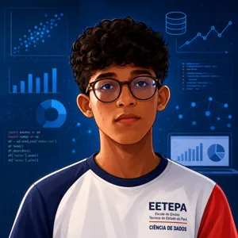
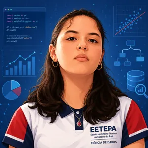
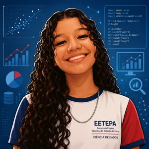
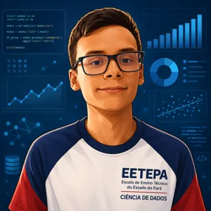
Integrantes: Emilly Layse Nunes Eleres, Felipe Diamantino da Silva, Estefany Lourrane Moreira da Silva, Pedro Lucas Espindola Moraes
Tecnologia: Dashboard analítico com mapa de ecopontos
Transmídia: Infográfico do descarte + vídeo curto
Projeto: Combate a Golpes Digitais na Família
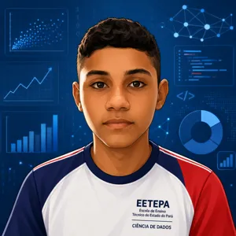
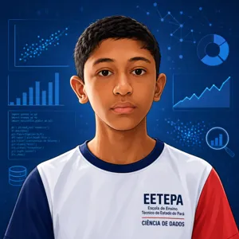
Integrantes: Carla Regina dos Santos, Myrza da Silva Alhadef, Dafne da Silva Carvalho
Tecnologia: Classificador de risco digital + assistente interativo
Transmídia: Simulação de golpes + guia de prevenção
Projeto: Consumo Energético Consciente
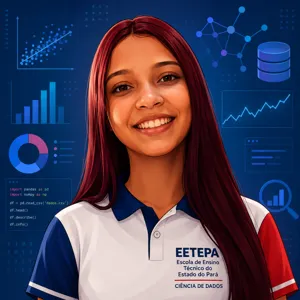
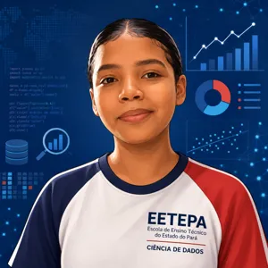
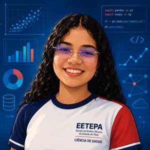
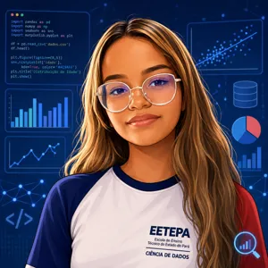
Integrantes: Matheus Neyson do Carmo de Souza, Yan Walber de Oliveira Mandu, Hendrew Nascimento Negrão, Rodrigo Daniel Batista dos Santos
Tecnologia: Painel de monitoramento e estimativa de consumo
Transmídia: Dashboard público escolar + vídeo de campanha
Projeto: IA para Separação de Recicláveis
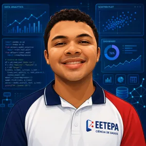
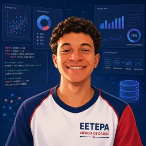
Integrantes: Christian dos Santos Paraguassu, Carlos Eduardo dos Santos Teixeira, Miguel Rocca de Araújo
Tecnologia: Visão computacional ou classificador visual prototipado
Transmídia: Vídeo demonstrativo + infográfico explicativo
Projeto: Checagem Educativa de Desinformação
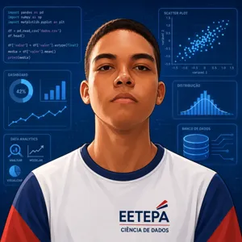
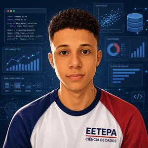
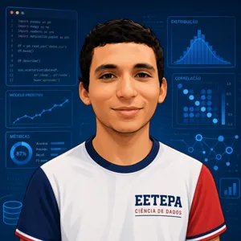
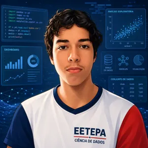
Integrantes: Emanuela Souza Amaral, Rykelme Cavalcante de Moura, Yago de Jesus Ferreira de Souza, João Guilherme Teixeira Cardoso da Silva
Tecnologia: Matriz de verificação e checklist guiado por fontes
Transmídia: Vídeo tutorial + guia de bolso rápido
Projeto: Horta Inteligente e Segurança Alimentar
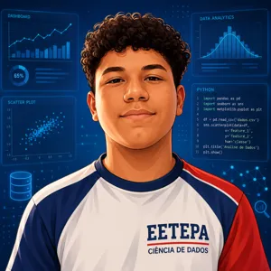
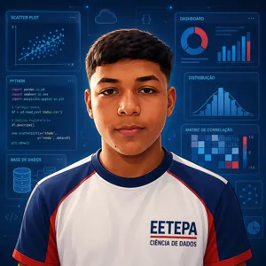
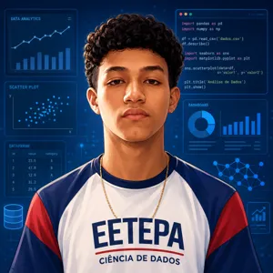
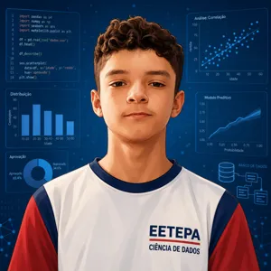
Integrantes: Wallace Reis Soares, Aryane Nazare Melo de Oliveira, Gustavo Barroso Santiago, Pedro Sales de Souza
Tecnologia: Painel de telemetria de sensores IoT simulados
Transmídia: Diário visual de plantio + vídeo de conscientização
Projeto: Mobilidade Segura Casa-Escola
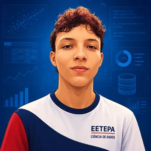
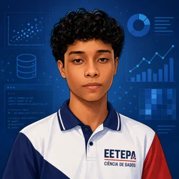
Integrantes: Kauã Gabriel Fernandes Amaral, Samuel Abner Silva da Silva, Rômulo Caio da Silva de Oliveira
Tecnologia: Mapa colaborativo de rotas com análise de riscos
Transmídia: Mapa interativo + narrativa em vídeo
Projeto: Acessibilidade Digital Escolar
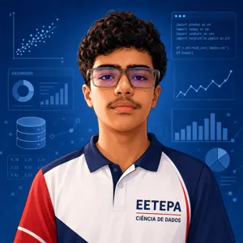
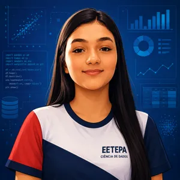
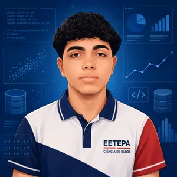
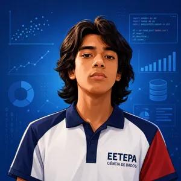
Integrantes: Abner Santiago Amaral Lopes, Josué Carvalho de Abreu, Marcelo Henrique Pereira Silva de Souza, Luiz Henrique Ferreira Araújo
Tecnologia: Repositório acessível e classificador de conformidade
Transmídia: Guia de boas práticas + vídeo acessível com legenda/Libras
Projeto: Riscos Ambientais Locais
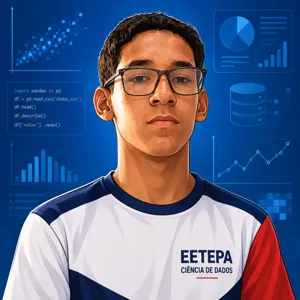
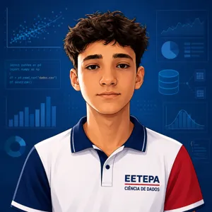
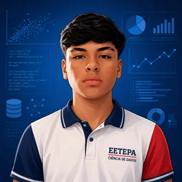
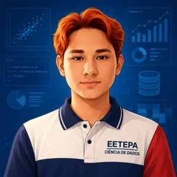
Integrantes: Miguel Carlos Chaves Rodrigues, Felipe Gabriel França da Costa, Cauã Giovanni Pinheiro dos Santos, Pedro Vinícius Costa da Silva
Tecnologia: Painel georreferenciado e mapa de calor de vulnerabilidade
Transmídia: Vídeo de apelo à comunidade + mapa de prevenção
Projeto: Uso Responsável e Ético de IA
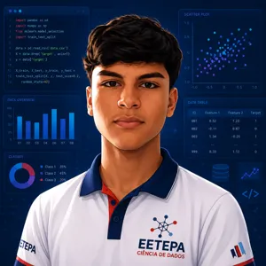
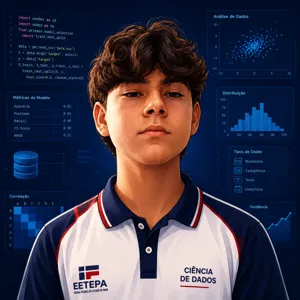
Integrantes: João Danilo Gomes Acácio, Mikael Chrystian Duarte Melo, João Guilherme Seabra de Castro
Tecnologia: Guia interativo de decisão e fluxograma lógico de ética
Transmídia: Cartilha em PDF + vídeo explicativo
Esta área simula o tipo de painel que as equipes podem construir: indicadores, ranking, evolução temporal e temas de impacto.
Reúna estudantes, escolha um problema relevante e prepare uma apresentação baseada em dados. A beta já deixa a proposta pronta para demonstração pública e evolução institucional.